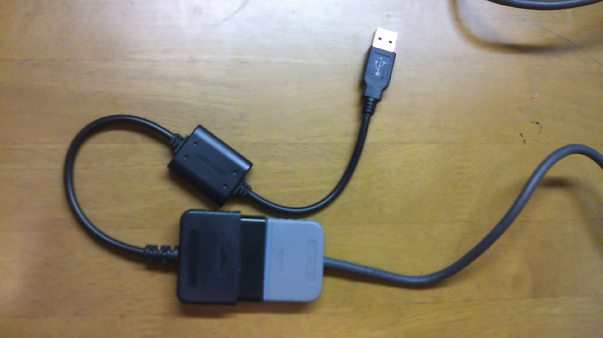
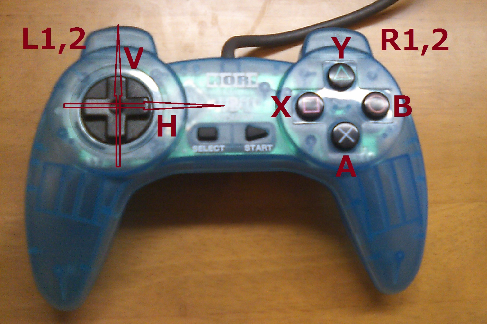
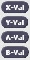
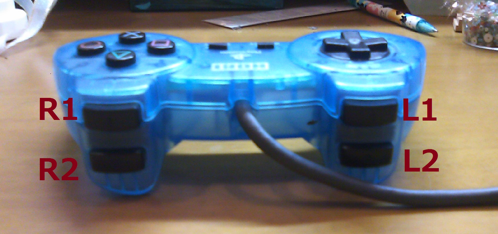
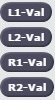
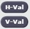
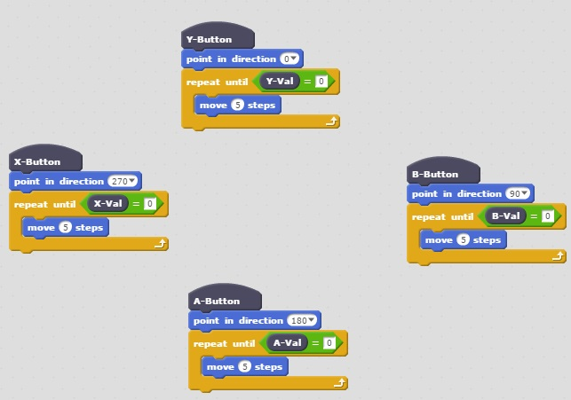
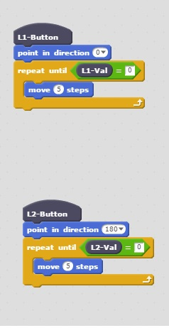
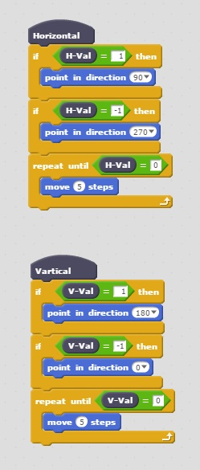

It's made by Gamepad API.
This API is one of the HTML5 functions defined by W3C.
- Gamepad API https://www.w3.org/TR/gamepad/
- W3C http://www.w3.org/
I neber check the other browsers can use Gamepad API now, December 2016.
A following photo is an example of Gamepad.
You can connect a Gamepad to PC via a gamepad usb comberter.

There are nine hat blocks and ten synchronous reporters in this extension.
|
 |
The extension is here.
http%3A%2F%2Fmasahirokakishita.github.io%2FWebMIDI%2Fgamepadapi.js
X-Button/Y-Button/A-Button/B-Button
These hats indicates that pushing right side butons of a gamepad.
X-Val/Y-Val/A-Val/B-Val 
These values are one for button on, and zero for button off.
L1-Button/L2-Button/R1-Button/R2-Button
These hats indicates that pushing back side butons of a gamepad.

L1-Val/L2-Val/R1-Val/R2-Val 
These values are one for button on, and zero for button off.
H-Button/V-Button
These hats indicates that pushing left side butons, a arrow key of a gamepad.
H-Val/V-Val 
H-Val is one for an upword button on and minus one for a downword button on.
V-Val is one for an rightword button on and minus one for a leftword button on.
Example 1 
The Example is here.
Example 2


The Example is here.
Example 3

The Example is here.